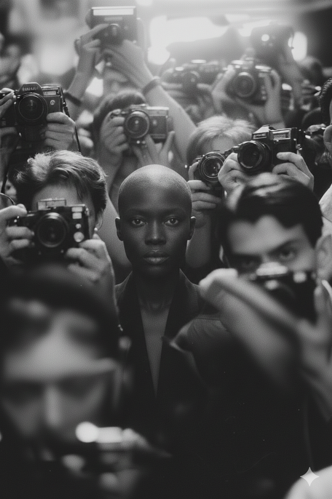
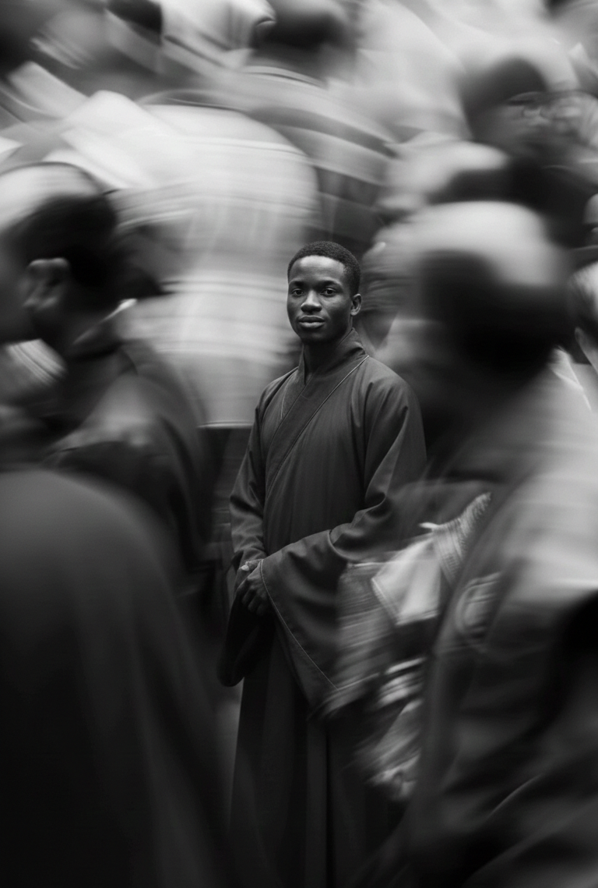
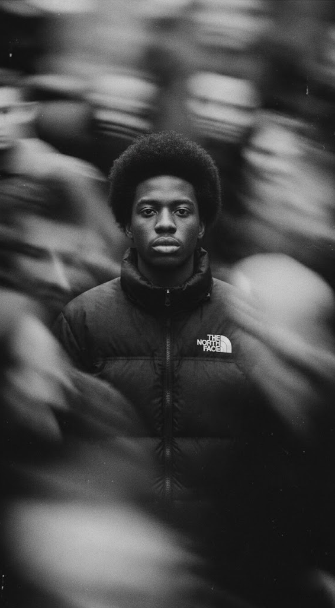

Marcas que ocupam espaço antes de falar.
Direção criativa multidisciplinar: branding sistêmico, produção de som, audiovisual cinematográfico e posicionamento nos motores de inteligência artificial.
Construção de presença, consistência e permanência.
Desenvolvemos identidades, filmes e sistemas visuais com intenção técnica estrita. Uma marca com arquitetura frágil é rapidamente diluída pela velocidade dos formatos modernos; uma estrutura desenhada com fundamento permanece.
Atuamos na intersecção entre comunicação visual, linguagem cinematográfica e engenharia semântica. Produzimos sistemas completos para empresas que exigem densidade plástica, clareza estratégica e relevância tanto no contato humano quanto na leitura dos novos ambientes de busca e síntese.


Sistemas aplicados no mercado.
Cada projeto parte de um diagnóstico profundo de negócio e resulta em um ecossistema executável. Abra cada estudo para visualizar as lâminas técnicas e a documentação da entrega.
Vamos desenhar a estrutura do seu projeto?
Atendimento centralizado com a direção de criação. Preencha os dados essenciais para direcionarmos a conversa no WhatsApp com contexto prévio.
Atuação
São Paulo / SP & Cruzeiro do Sul / AC